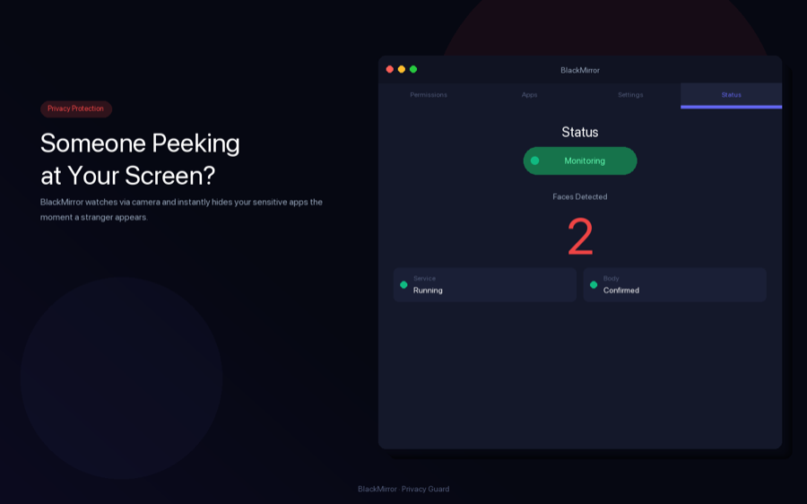

Mac screen privacy
Protect sensitive Mac work in shared spaces.
Anti-spy screen and Anti-spy screen Lite focus on screen privacy for Mac users who work in offices, cafes, meetings, and screen-sharing contexts where private windows should not stay exposed.

Mac privacy workflow
For work where screen exposure has a real cost.
This is for Mac users who need protected app hiding, presentation safety, and fewer screen-share leaks while handling sensitive work. For the full portfolio, compare it with the AI photo app and Travel Translator.
Useful when private windows should disappear during a privacy event.
Helps reduce accidental exposure during meetings or screen sharing.
Camera-based face-count detection is positioned as local Mac behavior.
Common questions
Answers for Mac privacy searches.
Which portfolio app is for Mac screen privacy?
Anti-spy screen is the main Mac privacy app, while Anti-spy screen Lite is the lightweight option.
Which situations are these apps for?
Shared offices, cafes, remote meetings, presentation mode, screen sharing, and sensitive-window workflows.